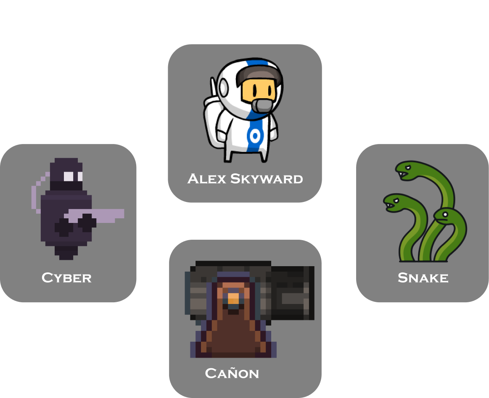
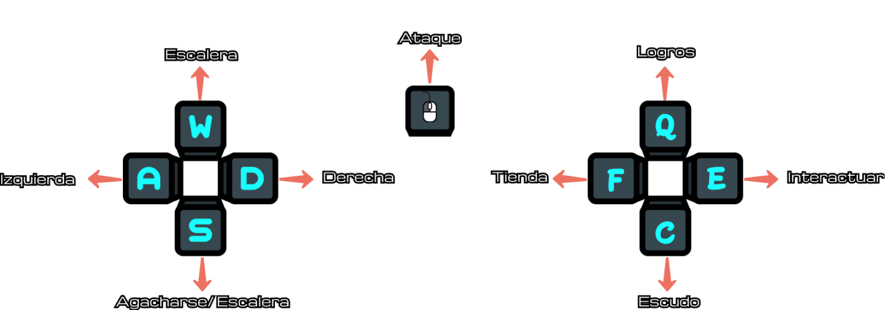

Historia
En una era de exploración intergaláctica, la humanidad ha alcanzado las estrellas, buscando nuevos mundos y civilizaciones. Eres el astronauta Alex Skyward, parte de la iniciativa "Leap Beyond", un proyecto destinado a explorar los confines más remotos del universo. Durante una misión rutinaria en la nave "Odyssey", una tormenta de materia oscura, golpea la nave, causando que se desvíe de su curso y se estrelle en el planeta desconocido de Zephyria. Este mundo está compuesto de plataformas flotantes.
Personajes
Jefe Final
En el planeta de Zephyria, un mundo de paisajes alienígenas y energía mágica, vive un personaje conocido como Xal'tharn. Xal'tharn tiene la apariencia de un demonio temido y respetado por todos los habitantes del planeta
Xal'tharn es un ser complejo. Es el guardián de los secretos de Zephyria y posee un vasto conocimiento de las artes arcanas. Su misión es proteger el equilibrio de su mundo, manteniendo a raya tanto las fuerzas oscuras como las luminosas que amenazan con desestabilizarlo
Controles
